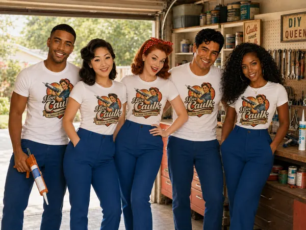

The I Love Caulk magazine
The Bead
How-tos, explainers, history, and advice from the Caulk Crew. Written for people who want the job done right, and for people who simply enjoy reading about caulk. Both are welcome here.

The lead story
How to lay a perfect bead
Fourteen steps, one steady hand, and zero mystery. Rosie's complete method for every joint in the house: prep, nozzle, pressure, tooling, cure, and a troubleshooting table for when it goes sideways.
 By Rosie, head caulker
By Rosie, head caulker
Fresh from the tube
Every story in The Bead, from the practical to the historical. Start anywhere.
How to remove old caulk
The unglamorous half of every job, and the half that decides whether the new bead lasts.
Caulk vs. sealant vs. everything else
Grout, putty, spackle, foam, and caulk all fill gaps. They are not interchangeable.

What's it made of, exactly?
Nine caulk formulations in plain English, with a quick-reference table.
Why your shower caulk turns black
What it is, how to clean it, when to replace it, and how to keep it white.
Backer rod and the art of joint design
The foam noodle that separates beads that last from beads that crack by February.
Choosing and using a caulk gun
Ratchet vs. smooth-rod, dripless, thrust ratios, and what to buy.
Caulking in the cold, the heat, and the humidity
How weather changes cure times, and the best season to seal.
The caulk aisle, decoded
ASTM C920, "siliconized," "rain-ready," and every other word on the tube.
A sticky history of caulk
From bitumen and oakum to silicone and hybrids, with one famous shipyard along the way.
Advice column
Dear Rosie
Caulking over old caulk, painting silicone, giant gaps, cloudy clear caulk, and the eternal question of how long to wait before you shower. Rosie answers the questions we hear all the time.